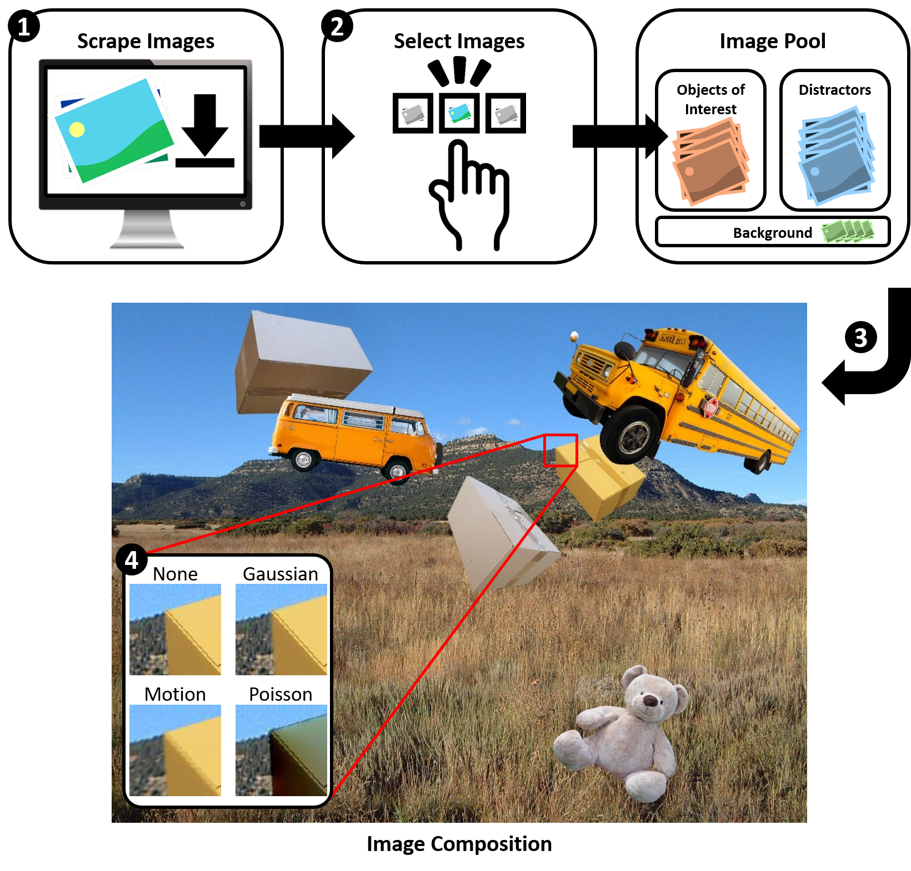

State-of-the-art approaches in computer vision heavily rely on sufficiently large training datasets. For real-world applications, obtaining such a dataset is usually a tedious task. In this paper, we present a fully automated pipeline to generate a synthetic dataset for instance segmentation in four steps. In contrast to existing work, our pipeline covers every step from data acquisition to the final dataset. We first scrape images for the objects of interest from popular image search engines and since we rely only on text-based queries the resulting data comprises a wide variety of images. Hence, image selection is necessary as a second step. This approach of image scraping and selection relaxes the need for a real-world domain-specific dataset that must be either publicly available or created for this purpose. We employ an object-agnostic background removal model and compare three different methods for image selection: Object-agnostic pre-processing, manual image selection and Convolutional Neural Network-based image selection. In the third step, we generate random arrangements of the object of interest and distractors on arbitrary backgrounds. Finally, the composition of the images is done by pasting the objects using four different blending methods. We present a case study for our dataset generation approach by considering parcel segmentation. For the evaluation we created a dataset of parcel photos that were annotated automatically. We find that (1) our dataset generation pipeline allows a successful transfer to real test images (Mask AP 86.2), (2) a very accurate image selection process - in contrast to human intuition - is not crucial and a broader category definition can help to bridge the domain gap, (3) the usage of blending methods is beneficial compared to simple copy-and-paste. We made our full code for scraping, image composition and training publicly available at https://a-nau.github.io/parcel2d.
